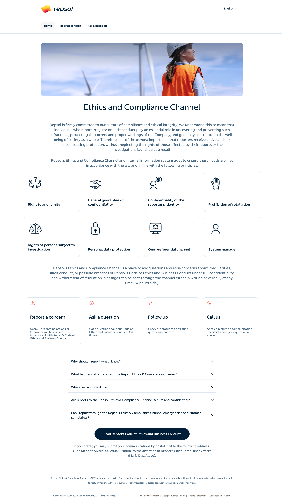

Hover to explore
NAVEX · EthicsPoint
Repsol
Built and customised the client-facing reporting website within the EthicsPoint platform, following client branding and implementation requirements.
My contribution: Front-end implementation, styling, configuration and testing.
View live site →